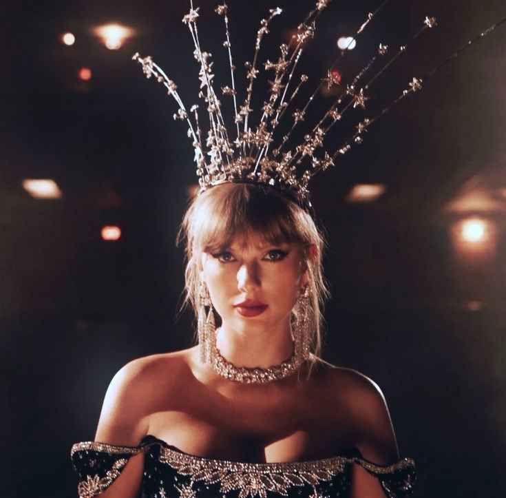

A artista que transformou emoções, histórias e eras em um fenômeno mundial.

Taylor Alison Swift nasceu em 13 de dezembro de 1989, em Reading, Pensilvânia, nos Estados Unidos. Desde muito nova demonstrou interesse pela música, especialmente pela música country, gênero que marcou o início da sua carreira. Inspirada por artistas como Shania Twain e Faith Hill, Taylor começou a cantar em festivais locais, concursos e pequenos eventos ainda durante a infância.
A paixão pela composição surgiu cedo. Aos 12 anos, Taylor já escrevia músicas próprias e aprendia violão. Sua habilidade em transformar sentimentos e experiências pessoais em letras profundas rapidamente chamou atenção. Com o sonho de seguir carreira artística, sua família se mudou para Nashville, Tennessee, considerada a capital da música country.
Em Nashville, Taylor começou a frequentar reuniões com gravadoras e compositores profissionais. Mesmo sendo muito jovem, sua maturidade artística impressionava. Pouco tempo depois, ela assinou contrato com a Big Machine Records e iniciou oficialmente sua trajetória na indústria musical.
Em 2006, lançou seu primeiro álbum, “Taylor Swift”. O projeto apresentou ao público uma artista adolescente com letras sinceras, românticas e extremamente pessoais. Faixas como “Tim McGraw” e “Teardrops On My Guitar” fez sucesso rapidamente e colocaram Taylor entre os principais nomes da nova geração do country.
O reconhecimento mundial começou a crescer em 2008 com o lançamento de “Fearless”. O álbum se tornou um fenômeno cultural, trazendo sucessos como “Love Story” e “You Belong With Me”. Além do enorme sucesso comercial, Taylor conquistou quatro Grammys, incluindo Álbum do Ano, tornando-se uma das artistas mais jovens a receber o prêmio.
Ao longo dos anos, Taylor Swift se destacou não apenas pela música, mas também pela capacidade de reinventar sua imagem e suas eras artísticas. Cada álbum passou a representar uma nova fase da sua vida, criando universos visuais e emocionais completamente diferentes.
Em 2010, lançou “Speak Now”, um álbum inteiramente escrito por ela mesma. O projeto mostrou maturidade emocional e fortaleceu sua reputação como compositora.
Logo depois vieram “Red” e “1989”, que marcaram sua transição definitiva do country para o pop.
“1989” transformou Taylor em uma das maiores artistas pop do planeta. O álbum trouxe hits globais como “Blank Space”, “Style” e “Shake It Off”, consolidando sua presença na cultura pop mundial. O visual sofisticado, inspirado nos anos 80, também se tornou um marco importante na carreira dela.
Em 2017, Taylor surpreendeu o público com “Reputation”, uma era mais sombria, intensa e provocativa. O álbum refletia os conflitos públicos enfrentados pela cantora naquele período e apresentou uma versão mais forte, estratégica e confiante da artista.
Depois disso, Taylor mostrou novamente sua versatilidade com “Lover”, um álbum colorido, romântico e leve. Em seguida, durante a pandemia, lançou “Folklore” e “Evermore”, projetos mais alternativos e introspectivos que receberam enorme aclamação da crítica.
Além da música, Taylor Swift também se tornou uma das figuras mais influentes da indústria do entretenimento. Sua relação próxima com os fãs, o cuidado com narrativas visuais e a maneira como construiu cada era fizeram dela um fenômeno cultural único.
Outro momento extremamente importante da carreira aconteceu quando Taylor decidiu regravar seus antigos álbuns, criando as chamadas “Taylor’s Version”. O projeto se tornou um símbolo de independência artística e controle sobre sua própria obra.
Com a “The Eras Tour”, Taylor alcançou um novo nível de impacto global. A turnê se tornou uma das maiores da história da música, reunindo milhões de fãs ao redor do mundo e transformando cada show em uma celebração de todas as fases da sua carreira.
Mais do que apenas uma cantora, Taylor Swift se tornou uma artista capaz de transformar sentimentos em experiências coletivas. Sua trajetória é marcada por evolução constante, criatividade, autenticidade e uma conexão extremamente forte com o público.
Atualmente, Taylor continua sendo uma das artistas mais importantes da indústria musical. Sua influência ultrapassa a música, alcançando moda, cinema, cultura pop e redes sociais. Cada nova era criada por ela se transforma em um acontecimento global.
“The Life of a Showgirl” representa justamente essa nova fase: uma Taylor mais madura, sofisticada e segura de si. Inspirada no glamour dos palcos e no brilho das apresentações, essa estética mistura elegância, vulnerabilidade e poder, mostrando uma artista que continua se reinventando sem perder sua essência.